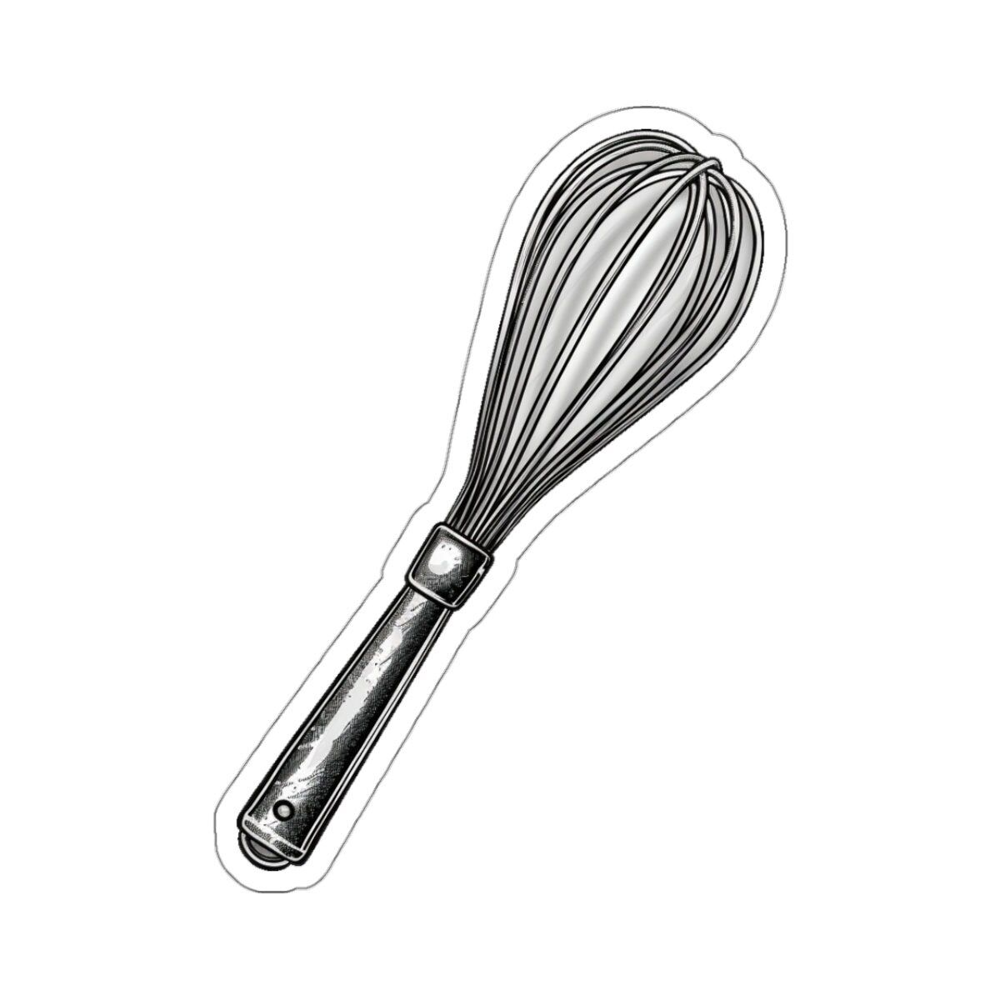
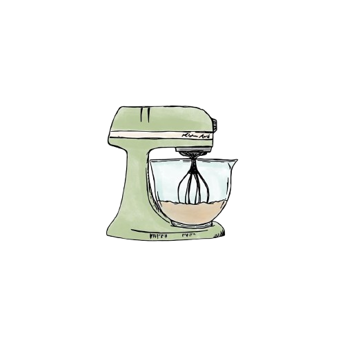

Easy Chocolate Cake Recipe!

Ingredients:
- All-purpose flour
- Sugar
- Unsweetened Cocoa powder
- Baking powder
- Baking soda
- Salt
- Expresso powder
- Milk
- Vegetable oil
- Vanilla extract
- Boiling water
Instructions:
-
Prep:Preheat oven to 350°F. Prepare two 9 inch cake pans spraying with baking spray or buttering.
-
Whisk dry ingredients: In a large bowl, whisk together the flour, sugar, cocoa powder, baking powder, baking soda,expresso powder and salt. Mix well.
-
Mix wet ingredients: Add milk, vegetable oil, and vanilla extract. Make sure to Mix it on medium speed,until well combined.
-
Added boiling water: Added boiling water to the batter and mix carefully until smooth.
-
Bake: Pour the batter evenly into the pans. Bake for 30-35 minutes or until a toothpick comes out clean.
-
Cool & Frost: Let cakes cool for 10 minutes, remove from pans and cool completey. Frost with chocolate buttercream frosting.
Enjoy your homemade chocolate cake! 🎂